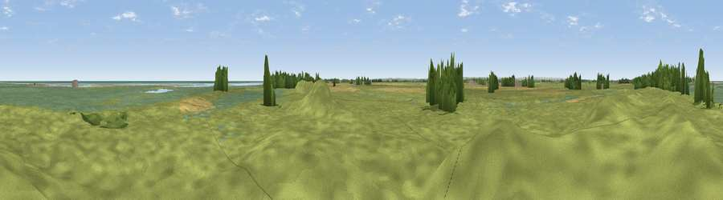

Viewpoint near Saltfleet
#22978 in England · top 35% of its area beats it · near Saltfleet · open accessWhere it is
The exact computed spot (TF 46829 91849). Click the marker for map links.
Public access: this spot lies on mapped open-access land (CRoW Act 2000) — you may roam here on foot. Computed from Natural England's CRoW access layer and OpenStreetMap rights of way — not the legal definitive map. Always verify locally.
The view, rendered

A 360° render of this exact spot computed from the terrain model, tree cover and land cover — summer colours, afternoon light, calibrated against photographs of famous viewpoints. Real trees, hedges and buildings will differ in detail.
The panorama
Grey silhouette: terrain skyline in each direction (720 bearings, Earth curvature and refraction included). Dashed green: skyline with trees (+15 m) and buildings (+8 m) as obstacles. Blue strip: how far the ground is visible on each bearing.
Where the view opens
Wedge length = distance to the farthest visible ground on that bearing (vegetation-aware). Rings at 10, 25 and 50 km.
What fills the view
58% grassland · 21% wetland · 12% cropland · 4% water · 4% woodland ·
Angular shares of the visible panorama (visual magnitude), not map area. Landscape diversity 0.52 (0–1 Shannon).
Key numbers
More beautiful places nearby
The staircase of upgrades: each row has a higher view potential than everything closer. Driving times are estimates from straight-line distance, calibrated against real road routing — check an actual route before setting out.
| Place | Direction | Drive | Score |
|---|---|---|---|
| Viewpoint near Saltfleet | SSE · 0 km | ~1 min | 52.0 |
| Donna Nook | NNW · 9 km | ~18 min | 52.6 |
| Viewpoint near Ludborough | W · 19 km | ~32 min | 53.5 |
| Viewpoint near Tetford | SW · 21 km | ~35 min | 58.0 |
| Warden Hill | SW · 22 km | ~36 min | 59.5 |
| Viewpoint near East Keal | SSW · 29 km | ~46 min | 66.0 |
| Viewpoint near Claxby | W · 35 km | ~54 min | 71.5 |
| Viewpoint near Bempton | NNW · 87 km | ~111 min | 72.8 |
53.40304, 0.20712 · source: osm viewpoint · position refined by local search. Computed location — check access rights before visiting.